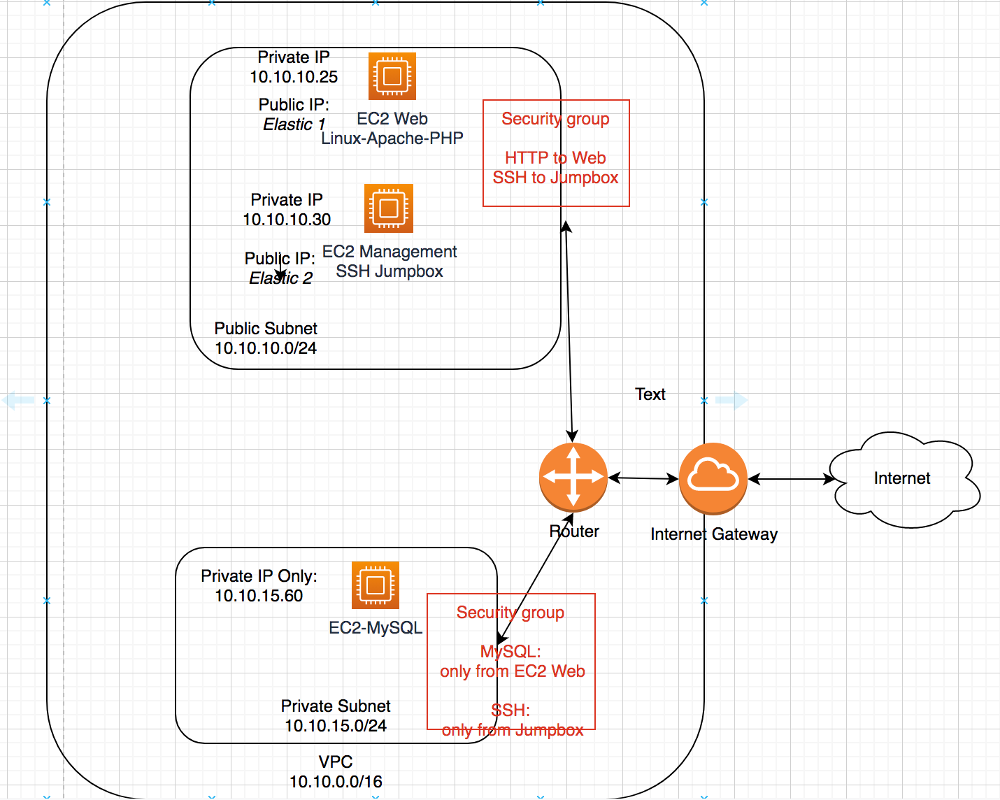

MOCs
- Network Diagram
- Configure Networking
- Create Instances
- NAT Gateway
- To associate the Elastic IPs
- SSHing
- MySQL Installation
Network Diagram

Configure Networking
VPC
- Open VPC console
- From the VPC dashboard, click
Create VPC - Select
VPC only - In the
Name tagfield, name the VPCfinal-paul - Specify the
10.10.0.0/16IPv4 CIDR block - Click
Create VPCto complete
Subnets
Public Subnet:
- In the left navigation bar, click
Subnets - Click
Create Subnet - Select the
final-paulVPC - Name the subnet
public-subnet-paul - Select AZ
us-east-1a - Specify the IPv4 block as
10.10.10.0/24 - Click
Create Subnetto complete
Private Subnet:
- Click
Create Subnet - Select the
final-paulVPC - Name the subnet
private-subnet-paul - Select AZ
us-east-1a - Specify the IPv4 block as
10.10.15.0/24 - Click
Create Subnetto complete
Internet Gateway
Create main internet gateway:
- On the left navigation bar, click
Internet gateways - Click
Create internet gateway - Name it
final-igw-paul - Click
Create internet gatewayto complete
Attach to VPC:
- Go to
Actions > Attach to VPC - Select the
finalVPC - Click
Attach internet gateway
Elastic IP
Create Elastic IP (Do this step twice):
- On the left navigation bar, click
Elastic IPs - Click
Allocate Elastic IP address - Confirm proper region is selected
- Click
Allocate
Routing
Create the public route table:
- On the navigation bar, click
Route tables - Click
Create route table - Name it
public-route-table-paul - Select the
finalVPC - Click
Create route tableto complete
Create the private route table:
- Go back to
Route tables - Click
Create route table - Name it
private-route-table - Select the
finalVPC - Click
Create route tableto complete
Associate the subnets:
- Go back to
Route tables - Select
public-route-table-paul - Click
Actions > Edit subnet associations - Click
public-subnet - Click
Save associations - Select
private-route-table - Click
Actions > Edit subnet associations - Click
private-subnet - Click
Save associations
Add a route to allow internet traffic into the VPC:
- Click on
public-route-table - Click
Actions > Edit routes - Click
Add route - For
Destination, set to0.0.0.0/0 - For
Target, set toInternet Gatewayand select thefinal-igw-paul - Click
Save changes
Create Instances
Create Web instance:
- Search for EC2
- Click
Launch instances - Name it
Web - Choose
Ubtuntuand use the22.04 LTSAMI - Create a new keypair,
final-joekey Editnetwork settings- Specify the
finalVPC - Ensure the
public-subnetis selected - Create a new security group named
public-sg-web - Update the description
- Expand the
Advanced network configurationsection - For the
Primary IP, specify10.10.10.25 - Click
Launch instance
Create Jumpbox instance:
- Click
Launch instances - Name it
Jumpbox - Choose
Ubtuntuand use the22.04 LTSAMI - Use the new keypair,
final-joekey Editnetwork settings- Specify the
finalVPC - Ensure the
public-subnetis selected - Create a new security group named
public-sg-jumpbox - Update description
- Expand the
Advanced network configurationsection - For the
Primary IP, specify10.10.10.30 - Click
Launch instance
Create the MySQL instance:
- Click
Launch instances - Name it
MySQL - Choose
Ubtuntuand use the22.04 LTSAMI - Use the new keypair,
final-joekey Editnetwork settings- Specify the
finalVPC - Ensure the
private-subnetis selected - Create a
private-sgsecurity group - Update the description
- Expand the
Advanced network configurationsection - For the
Primary IP, specify10.10.15.60 - Click
Launch instance
Configure Security Groups
You don’t have to touch public-sg-jumpbox
Configure public-sg-web:
- Go to
Security Groupsin the left navigation bar - Click on the
Security group IDof thepublic-sg-web - Click
Edit inbound rules - Click
Add rule- Type: HTTP
- Source: Anywhere-IPv4
- Edit the SSH rule from
0.0.0.0/0to10.10.10.30/32 - Click
Save rules
Configure private-sg:
- Go back to
Security Groups - Click on the
Security group IDof theprivate-sg - Click
Edit inbound rules - Remove the
0.0.0.0/0and replace with10.10.10.30/32 - Click
Add rule- Type: MYSQL/Aurora
- Source: 10.10.10.25/32
- Click
Save rules
NAT Gateway
Create the NAT Gateway for public-subnet:
- Search for VPC
- In the left naviagtion bar, click
NAT gateways - Click
Create NAT gateway - Name it
public-nat-gateway - Select the
public-subnet - Click
Allocate Elastic IP - Click
Create NAT gateway
Update Private Route Table
Add the route to the NAT gateway:
- In the left naviagtion bar, click
Route Tables - Click
private-route-table - Click
Actions > Edit routes - Click
Add route- Destination: 0.0.0.0/0
- Target:
NAT Gateway& select the gateway
- Click
Save changes
To associate the Elastic IPs:
Associate Elastic IPs:
- In the navigation bar, click
Elastic IPs - Right click on an unassociated Elastic IP and click
Associate Elastic IP Address - Choose the
Jumpboxinstance and fill in the assigned private IP - Repeat the steps on the other unassociated Elastic IP and assign it to the
Webinstance
SSHing
SSH into a host with an Elastic IP by:
ssh -i /path/to/key.pem ubuntu@<Public-IP>
To access the MySQL/Web instances:
- SCP private key to Jumpbox
scp -i ./paul-final.pem ubuntu@<Public-IP>:~
- SSH into Jumpbox
ssh -i ./paul-final.pem ubuntu@<Public-IP>
- Change permissions on the keyfile
chmod 400 paul-final.pem
- SSH from Jumpbox to MySQL
ssh -i paul-final.pem ubuntu@<Public-IP>
MySQL Installation
- SSH to MySQL instance
- Install MySQL Server
sudo apt install mysql-server
- Prepare to run
mysql_secure_installationscript
sudo mysql
ALTER USER 'root'@'localhost' IDENTIFIED WITH mysql_native_password BY 'root';
Info
This changes the password to
rootand avoids the issues with the secure installation script. Don’t worry, this is changed when the script is run.
exit
- Run the secure installation script
sudo mysql_secure_installation
Info
Answer NO to the VALIDATE PASSWORD plugin. YES to the rest
- Connect to the MySQL server
mysql -u root -p
MySQL Setup
- Create a database for the WordPress installation:
CREATE DATABASE wordpress_db;
- Create the WordPress user:
CREATE USER 'wp_user'@'10.10.10.25' IDENTIFIED BY 'password';
- Apply proper permissions to the user:
GRANT ALL ON wordpress_db.* TO 'wp_user'@'10.10.10.25';
- Flush privileges:
FLUSH PRIVILEGES;
- Exit
exit
- Set MySQL to listen for remote connections:
sudo vim /etc/mysql/mysql.conf.d/mysqld.cnf
- Change the
bind-addressline to the private IP
bind-address = 10.10.15.60
- Restart mysql
sudo systemctl restart mysql.service
Install Apache
- SSH into
jumpinstance - SSH into
Webinstance - Apt update
- Install apache2
sudo apt install apache2
- Enable Apache
sudo systemctl enable apache2
- Test that the temp apache web server is up at the public IP of the
web instance
Install PHP
On Web:
- Install php packages:
sudo apt install php libapache2-mod-php php-mysql
- Check that php installed correctly
php -v
WordPress Installation
On Web:
- Install the latest WordPress tarball
cd /tmp && wget https://wordpress.org/latest.tar.gz
- Decompress:
tar -xvf latest.tar.gz
- Copy the folder to
/var/www/html
sudo cp -R wordpress /var/www/html/
- Change ownership of
/wordpress/:
sudo chown -R www-data:www-data /var/www/html/wordpress/
- Change file permissions of directory contents:
sudo chmod -R 755 /var/www/html/wordpress/
- Create
/uploads/:
sudo mkdir /var/www/html/wordpress/wp-content/uploads
- Change perms of
/uploads/:
sudo chown -R www-data:www-data /var/www/html/wordpress/wp-content/uploads/
WordPress Configuration
On your host:
- Browse to http://Public-IP/wordpress
- Select a language and
Continue - Hit
Lets go! - Fill out the wizard
- DB Name: wordpress_db
- Username: wp_user
- Password: password
- Database Host: 10.10.15.60
SubmitRun the installation- Set the site title, username, and password. Then proceed.
- Log in with the credentials you just set